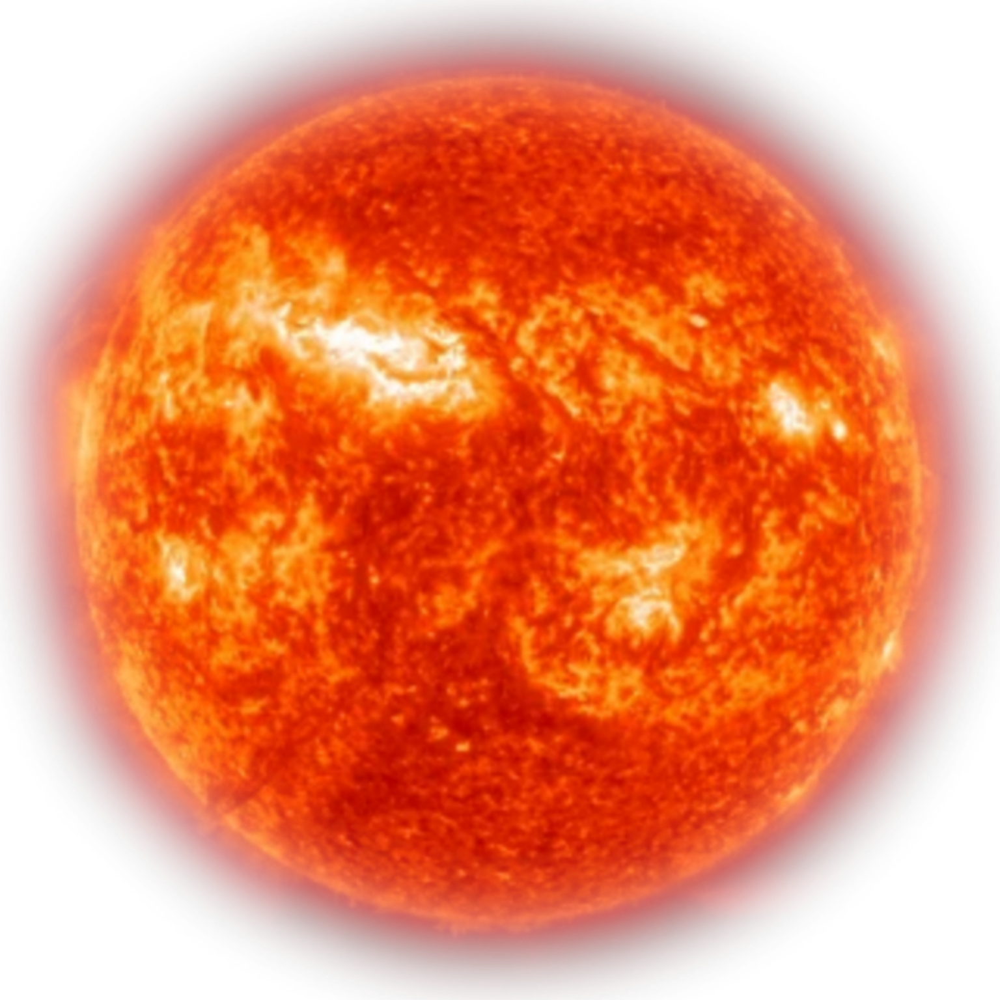

Солнце
Общая информация
Со́лнце — одна из звёзд нашей Галактики и единственная
звезда Солнечной системы. Вокруг Солнца обращаются другие
объекты этой системы: планеты и их спутники, карликовые
планеты и их спутники,астероиды, метеороиды,
кометы и космическая пыль.
Солнце принадлежит к первому типу звёздного населения.
Одна из распространённых теорий возникновения Солнечной
системы предполагает, что её формирование было вызвано взрывами
одной или нескольких сверхновых звёзд. Это предположение
основано, в частности, на том, что в веществе Солнечной системы содержится аномально большая доля золота и урана, которые могли бы быть результатом эндотермических реакций, вызванных этим взрывом, или ядерного превращения элементов путём поглощения нейтронов веществом массивной звезды второго поколения.
Излучение Излучение Солнца — основной источник энергии на Земле. Его мощность характеризуется солнечной постоянной — мощностью излучения, проходящего через площадку единичной площади, перпендикулярную солнечным лучам и расположенную на расстоянии одной астрономической единицы от Солнца (то есть на орбите Земли) вне земной атмосферы. Эта постоянная равна приблизительно 1,37 кВт/м².
Проходя сквозь атмосферу Земли, солнечное излучение теряет в энергии примерно 370 Вт/м², и до земной поверхности доходит только 1000 Вт/м² (при ясной погоде и когда Солнце находится в зените). Эта энергия может использоваться в различных естественных и искусственных процессах. Так, растения, используя её посредством фотосинтеза, синтезируют органические соединения с выделением кислорода. Прямое нагревание солнечными лучами или преобразование энергии с помощью фотоэлементов может быть использовано для производства электроэнергии (солнечными электростанциями) или выполнения другой полезной работы. Путём фотосинтеза была в далёком прошлом получена и энергия, запасённая в нефти и других видах ископаемого топлива.
Земля
